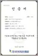
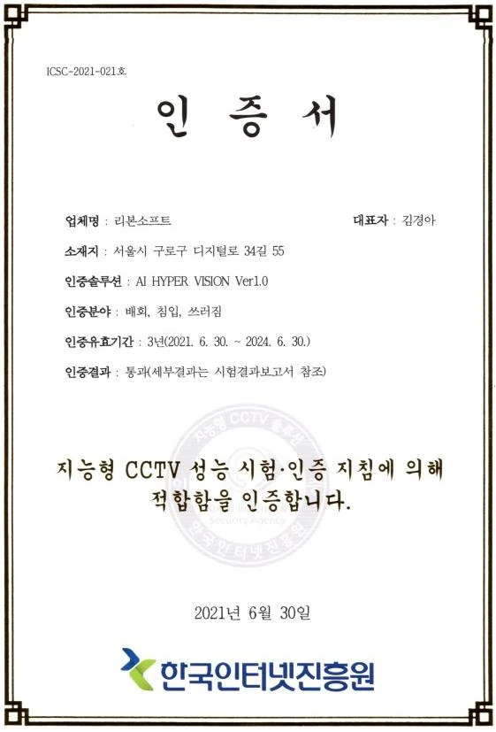
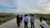
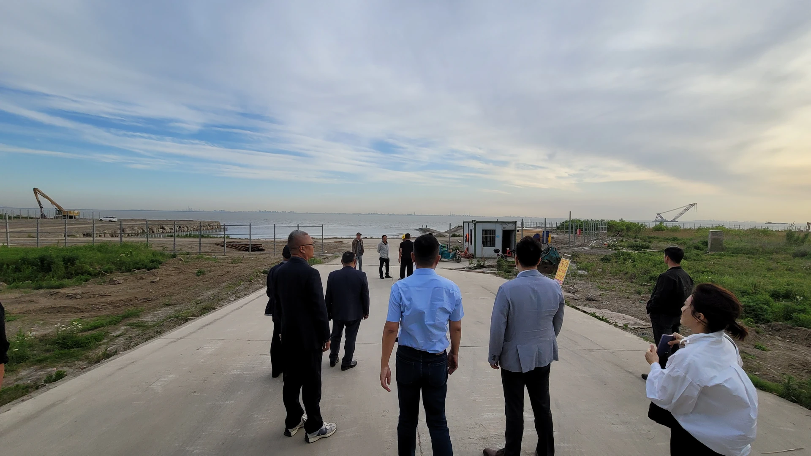

기술의 범위를 넓혀 왔습니다.
얼굴과 움직임을 인식하는 기술에서 시작해, 사용자가 활동하는 디지털 환경과 실제 공간 경험까지 적용 범위를 확장해 왔습니다.
FROM PERCEPTION TO EXPERIENCE
사람과 행동을 이해하는 기술.
컴퓨터 비전, 얼굴·동작 인식과 추적을 기반으로 시스템이 사용자를 인식하고 반응하도록 만듭니다.
사람이 활동할 수 있는 디지털 공간.
가상환경, 플랫폼, 디지털트윈을 통해 연결·협업·상호작용이 가능한 환경을 구축합니다.
기술을 실제 경험으로 확장합니다.
소프트웨어, 미디어, VR·AR, 시뮬레이터와 콘텐츠를 실제 공간과 방문자 경험에 연결합니다.
실제 환경에서 작동한 기술
적용 경험을 뒷받침하는 기술 근거


KISA AI HYPER VISION Ver1.0
지능형 CCTV 솔루션 성능인증
AI·ICT 특허
AI 및 ICT 분야 등록 특허 6건
기업부설연구소 · 벤처기업 · TCB T3
기술 개발 기반과 기업 기술등급 이력


SCO 노아의 방주 프로젝트
리본소프트는 현재 SCO 노아의 방주 프로젝트에 참여하고 있습니다. 축적해 온 디지털 기술과 인터랙션, 환경·경험 역량을 더 큰 국제 프로젝트 단위로 확장하고 있습니다.
STATUS · 진행 중 · 2025–2026